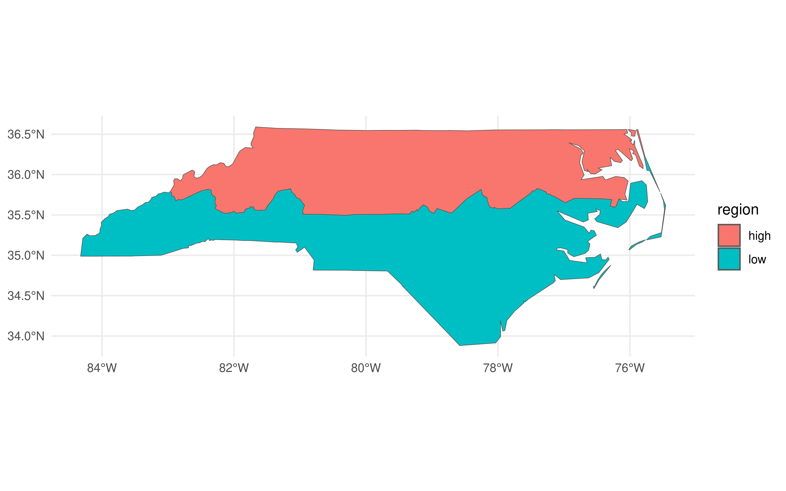
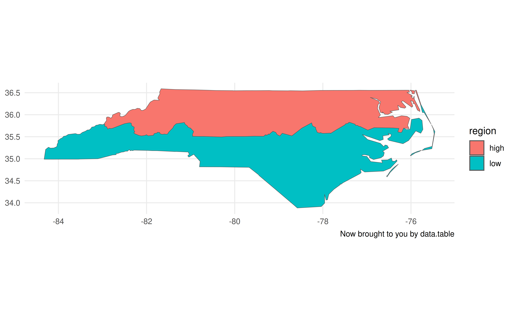
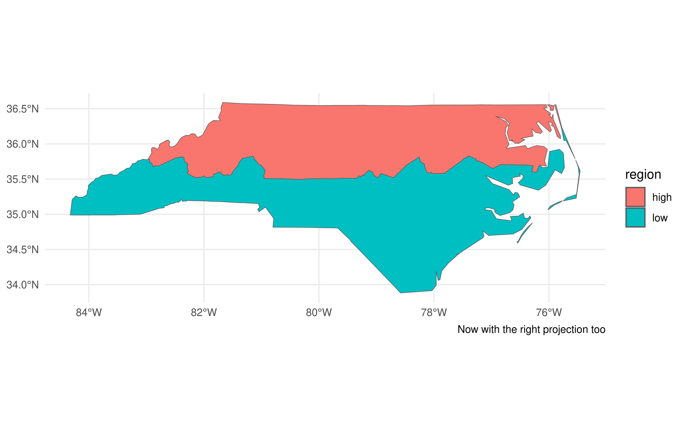
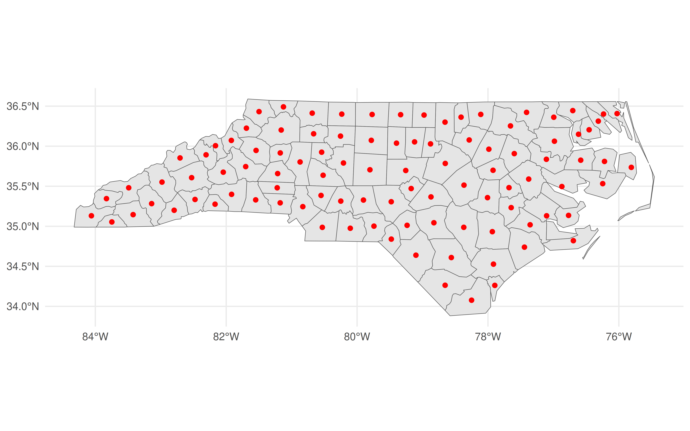
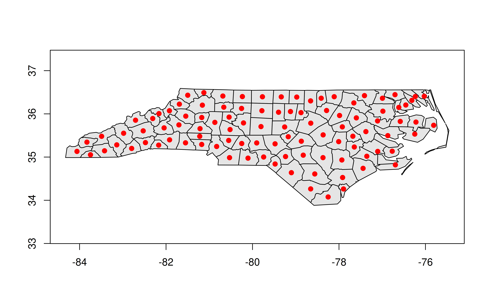
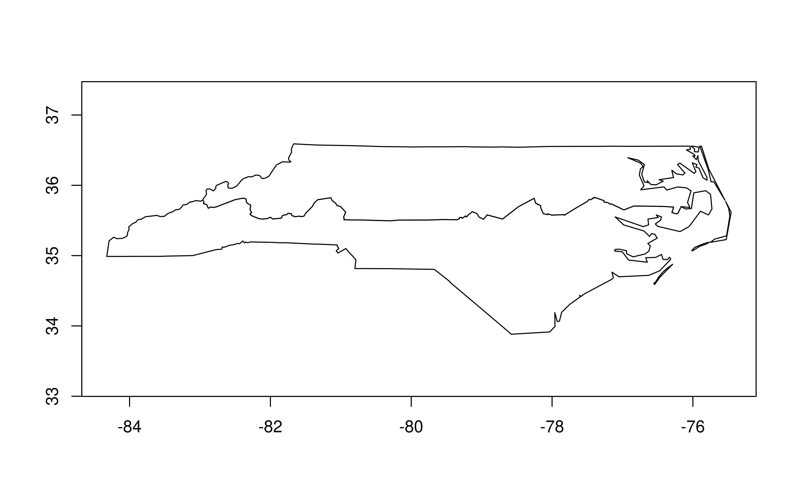

## Data wrangling
library(dplyr)
library(data.table)
## Geospatial
library(sf)
library(geos)
## Plotting
library(ggplot2)
theme_set(theme_minimal())
## Benchmarking
library(microbenchmark)
Note
I’ve updated this post to reflect the fact that we no longer need the development version of data.table.
Motivation
This blog post pulls together various tips and suggestions that I’ve left around the place. My main goal is to show you some simple workflows that I use for high-performance geospatial work in R, leaning on the data.table, sf and geos packages.
If you’re the type of person who likes to load everything at once, here are the R libraries and theme settings that I’ll be using in this post. (Don’t worry if not: I’ll be loading them again in the relevant sections below to underscore why I’m calling a specific library.)
data.table + sf workflow
Everyone who does spatial work in R is familiar with the wonderful sf package. You know, this one:
library(sf)
library(ggplot2); theme_set(theme_minimal())
## Grab the North Carolina shapefile that comes bundled with sf
nc_shapefile = system.file("shape/nc.shp", package = "sf")
nc = st_read(nc_shapefile)Reading layer `nc' from data source `/usr/lib/R/library/sf/shape/nc.shp' using driver `ESRI Shapefile'
Simple feature collection with 100 features and 14 fields
Geometry type: MULTIPOLYGON
Dimension: XY
Bounding box: xmin: -84.32385 ymin: 33.88199 xmax: -75.45698 ymax: 36.58965
Geodetic CRS: NAD27## Quick plot
ggplot(nc) + geom_sf()
The revolutionary idea of sf was (is) that it allowed you to treat spatial objects as regular data frames, so you can do things like this:
library(dplyr)
nc |>
group_by(region = ifelse(CNTY_ID<=1980, 'high', 'low')) |>
summarise(geometry = st_union(geometry)) |>
ggplot(aes(fill=region)) +
geom_sf()
In the above code chunk, I’m using dplyr to do a grouped aggregation on our North Carolina data object. The aggregation itself is pretty silly—i.e. divide the state into two hemispheres—but the same idea extends to virtually all of dplyr’s capabilities. It makes for a very potent and flexible combination that has driven an awful lot of R-based spatial work in recent years.
At the same time, there’s another powerful data wrangling library in R: data.table. This post is not going to rehash the (mostly pointless) debates about which of dplyr or data.table is better.1 But I think it’s fair to say that the latter offers incredible performance that makes it a must-use library for a lot of people, including myself. Yet it seems to me that many data.table users aren’t aware that you can use it for spatial operations in exactly the same way.
Tipdata.table v1.15.0+
If you’re following along on your own computer, make sure that you have data.table v1.15.0 (released January 2024) or a newer version before continuing:
Okay, let’s create a “data.table” version of our nc object and take a quick look at the first few rows and some columns.
library(data.table)
nc_dt = as.data.table(nc)
nc_dt[1:3, c('NAME', 'CNTY_ID', 'geometry')] NAME CNTY_ID geometry
<char> <num> <sfc_MULTIPOLYGON>
1: Ashe 1825 MULTIPOLYGON (((-81.47276 3...
2: Alleghany 1827 MULTIPOLYGON (((-81.23989 3...
3: Surry 1828 MULTIPOLYGON (((-80.45634 3...At this point, I have to briefly back up to say that the reason I wanted you to grab a newer version of data.table is that it “pretty prints” the columns by default. This not only includes the columns types and keys (if you’ve set any), but also the special sfc_MULTIPLOYGON list columns which is where the sf magic is hiding. It’s a small cosmetic change that nonetheless underscores the integration between these two packages.2
Just like we did with dplyr earlier, we can now do grouped spatial operations on this object using data.table’s concise syntax:
bb = st_bbox(nc) # https://github.com/Rdatatable/data.table/issues/6707
nc_dt[
,
.(geometry = st_union(geometry)),
by = .(region = ifelse(CNTY_ID<=1980, 'high', 'low'))
] |>
ggplot(aes(geometry=geometry, fill=region)) +
geom_sf() +
coord_sf(xlim = bb[c(1,3)], ylim = bb[c(2,4)]) +
labs(caption = "Now brought to you by data.table")
Now, I’ll admit that there are a few tweaks we need to make to the plot call. Unlike with the non-data.table workflow, this time we have to specify the geometry aesthetic with aes(geometry=geometry, ...). Otherwise, ggplot2 won’t know what do with this object. The other difference is that it doesn’t automatically recognise the CRS (i.e. “NAD27”), so the projection is a little off. Again, however, that information is contained with the geometry column of our nc_dt object. It just requires that we provide the CRS to our plot call explicitly.
## Grab CRS from the geometry column
crs = st_crs(nc_dt$geometry)
## Update our previous plot
last_plot() +
coord_sf(xlim = bb[c(1,3)], ylim = bb[c(2,4)], crs = crs) +
labs(caption = "Now with the right projection too")Coordinate system already present. Adding new coordinate system, which will
replace the existing one.
Plotting tweaks aside, I don’t want to lose sight of the main point of this post, namely: sf and data.table play perfectly well together. You can do (grouped) spatial operations and aggregations inside the latter, exactly how you would any other data wrangling task. So if you love data.table’s performance and syntax, then by all means continue using it for your spatial work too. Speaking of performance…
Speeding things up with geos
Update (2022-02-16): The benchmarks in this section are a bit unfair, since geos assumes planar (“flat”) geometries, whereas sf assumes spherical (“curved”) geometries by default. See the postscript at the bottom of this post, which corrects for this discrepancy.
As great as sf is, even its most ardent proponents will admit that it can drag a bit when it comes to big geospatial tasks. I don’t want to imply that that it’s “slow”. But I’ve found that it does lag behind geopandas, for example, when I’m doing heavy geospatial computation or working with really large spatial files. Luckily, there’s a new package in town that offers major performance gains and plays very well with the workflow I demonstrated above.
Dewey Dunnington and Edzer Pebesma’s geos package covers all of the same basic geospatial operations as sf. But it does so by directly wrapping the underlying GEOS API, which is written in C and is thus extremely performant. Here’s a simple example, where we calculate the centroid of each North Carolina county.
library(geos) ## For geos operations
library(microbenchmark) ## For benchmarking
## Create a geos geometry object
nc_geos = nc |> as_geos_geometry()
## Benchmark
microbenchmark(
sf = nc$geometry |> st_centroid(),
geos = nc_geos |> geos_centroid(),
times = 2
)Unit: microseconds
expr min lq mean median uq max neval cld
sf 6312.215 6312.215 6717.8645 6717.8645 7123.514 7123.514 2 a
geos 132.241 132.241 166.0505 166.0505 199.860 199.860 2 bA couple of things worth noting. First, the geos centroid calculation completes orders of magnitude faster than the sf equivalent. Second, the executing functions are very similar (st_centroid() vs geos_centroid()). Third, we have to do an explicit as_geos_geometry() coercion before we can perform any geos operations on the resulting object.
That last point seems the most mundane. (Why aren’t you talking more about how crazy fast geos is?!) But it’s important since it underscores a key difference between the two packages and why the developers view them as complements. Unlike sf, which treats spatial objects as data frames, geos only preserves the geometry attributes. Take a look:
head(nc_geos)<geos_geometry[6] with CRS=NAD27>
[1] <MULTIPOLYGON [-81.741 36.234...-81.240 36.590]>
[2] <MULTIPOLYGON [-81.348 36.365...-80.903 36.573]>
[3] <MULTIPOLYGON [-80.966 36.234...-80.435 36.565]>
[4] <MULTIPOLYGON [-76.330 36.073...-75.773 36.557]>
[5] <MULTIPOLYGON [-77.901 36.163...-77.075 36.556]>
[6] <MULTIPOLYGON [-77.218 36.230...-76.707 36.556]>Gone are all those extra columns containing information about county names, FIPS codes, population numbers, etc. etc. We’re just left with the necessary information to do high-performance spatial operations.
Quick aside on plotting geos objects
Because we’ve dropped all of the sf / data frame attributes, we can’t use ggplot2 to plot anymore. But we can use the base R plotting method:
plot(nc_geos, col = "gray90")
plot(geos_centroid(nc_geos), pch = 21, col = 'red', bg = 'red', add = TRUE)
Actually, that’s not quite true, since an alternative is to convert it back into an sf object with st_as_sf() and then call ggplot2. This is particularly useful because you can hand off some heavy calculation to geos before bringing it back to sf for any additional functionality. Again, the developers of these packages designed them to act as complements.
ggplot() +
geom_sf(data = nc) +
geom_sf(data = nc_geos |> geos_centroid() |> st_as_sf(),
col = "red")
Okay, back to the main post…
data.table + geos workflow
Finally, we get to the pièce de résistance of today’s post. The fact that as_geos_geometry() creates a GEOS geometry object—rather than preserving all of the data frame attributes—is a good thing for our data.table workflow. Why? Well, because we can just include this geometry object as a list column inside our data.table.3 In turn, this means you can treat spatial operations as you would any other operation inside a data.table. You can aggregate by group, merge, compare, and generally combine the power of data.table and geos as you see fit.
(The same is true for regular data frames and tibbles, but we’ll get to that.)
Let’s prove that this idea works by creating a GEOS column in our data.table. I’ll creatively call this column geo, but really you could call it anything you want (including overwriting the existing geometry column).
nc_dt[, geo := as_geos_geometry(geometry)]
nc_dt[1:3, c('NAME', 'CNTY_ID', 'geo')] ## Print a few rows/columns NAME CNTY_ID geo
<char> <num> <geos_geometry>
1: Ashe 1825 <MULTIPOLYGON [-81.741 36.234...-81.240 36.590]>
2: Alleghany 1827 <MULTIPOLYGON [-81.348 36.365...-80.903 36.573]>
3: Surry 1828 <MULTIPOLYGON [-80.966 36.234...-80.435 36.565]>GEOS column in hand, we can manipulate or plot it directly from within the data.table. For example, we can recreate our previous centroid plot.
plot(nc_dt[, geo], col = "gray90")
plot(nc_dt[, geos_centroid(geo)], pch = 21, col = 'red', bg = 'red', add = TRUE)
And here’s how we could replicate our earlier “hemisphere” plot:
nc_dt[
,
.(geo = geo |> geos_make_collection() |> geos_unary_union()),
by = .(region = ifelse(CNTY_ID<=1980, 'high', 'low'))
][, geo] |>
plot()
This time around the translation from the equivalent sf code isn’t as direct. We have one step (st_union()) vs. two (geos_make_collection() |> geos_unary_union()). The second geo_unary_union() step is clear enough. But it’s the first geos_make_collection()step that’s key for our aggregating task. We have to tell geos to treat everything within the same group (i.e. whatever is in by = ...) as a collective. This extra step becomes very natural after you’ve done it a few times and is a small price to pay for the resulting performance boost.
Speaking of which, it’s nearly time for some final benchmarks. The only extra thing I want to do first is, as promised, include a tibble/dplyr equivalent. The exact same concepts and benefits carry over here, for those of you that prefer the tidyverse syntax and workflow.4
nc_tibble = tibble::as_tibble(nc) |>
mutate(geo = as_geos_geometry(geometry))Benchmarks
For this final set of benchmarks, I’m going to horserace the same grouped aggregation that we’ve been using throughout.
microbenchmark(
sf_tidy = nc |>
group_by(region = ifelse(CNTY_ID<=1980, 'high', 'low')) |>
summarise(geometry = st_union(geometry)),
sf_dt = nc_dt[
,
.(geometry = st_union(geometry)),
by = .(region = ifelse(CNTY_ID<=1980, 'high', 'low'))
],
geos_tidy = nc_tibble |>
group_by(region = ifelse(CNTY_ID<=1980, 'high', 'low')) |>
summarise(geo = geos_unary_union(geos_make_collection(geo))),
geos_dt = nc_dt[
,
.(geo = geos_unary_union(geos_make_collection(geo))),
by = .(region = ifelse(CNTY_ID<=1980, 'high', 'low'))
],
times = 2
)Unit: milliseconds
expr min lq mean median uq max neval cld
sf_tidy 58.05696 58.05696 58.76766 58.76766 59.47837 59.47837 2 a
sf_dt 52.38609 52.38609 52.74219 52.74219 53.09829 53.09829 2 b
geos_tidy 13.34309 13.34309 13.64761 13.64761 13.95212 13.95212 2 c
geos_dt 10.02459 10.02459 10.02478 10.02478 10.02496 10.02496 2 dResult: A 6x speed-up. Nice! While the toy dataset that we’re using here is too small to make a meaningful difference in practice, those same performance benefits will carry over to big geospatial tasks too. Being able to reduce your computation time by a factor of 10 really makes a difference once you’re talking minutes or hours.
Conclusion
My takeaways:
It’s fine to treat sf objects as data.tables (or vice versa) if that’s your preferred workflow. Just remember to specify the geometry column.
For large (or small!) geospatial tasks, give the geos package a go. It integrates very well with both data.table and the tidyverse, and the high-performance benefits carry over to both ecosystems.
By the way, there are more exciting high-performance geospatial developments on the way in R (as well as other languages) like geoarrow. We’re lucky to have these tools at our disposal.
Postscript: planar vs spherical
Note: This section was added on 2021-01-16.
As Roger Bivand points out on Twitter, I’m not truly comparing apples with apples in the above benchmarks. geos assumes planar (“flat”) geometries, whereas sf does the more complicated task of calculating spherical (“curved”) geometries. More on that here if you are interested. Below I repeat these same benchmarks, but with sf switched to the same planar backend. The upshot is that geos is still faster, but the gap narrows considerably. A reminder that we’re also dealing with a very small dataset, so I recommend benchmarking on your own datasets to avoid the influence of misleading overhead. But I stand by my comment that these differences persist at scale, based on my own experiences and testing.
## Turn off sf's spherical ("S2") backend
sf_use_s2(FALSE)
## Now redo our earlier benchmarks...
## Centroid
microbenchmark(
sf = nc$geometry |> st_centroid(),
geos = nc_geos |> geos_centroid(),
times = 2
)Unit: microseconds
expr min lq mean median uq max neval cld
sf 2163.516 2163.516 2451.2185 2451.2185 2738.921 2738.921 2 a
geos 106.383 106.383 124.3305 124.3305 142.278 142.278 2 b## Hemisphere aggregation
microbenchmark(
sf_tidy = nc |>
group_by(region = ifelse(CNTY_ID<=1980, 'high', 'low')) |>
summarise(geometry = st_union(geometry)),
sf_dt = nc_dt[
,
.(geometry = st_union(geometry)),
by = .(region = ifelse(CNTY_ID<=1980, 'high', 'low'))
],
geos_tidy = nc_tibble |>
group_by(region = ifelse(CNTY_ID<=1980, 'high', 'low')) |>
summarise(geo = geos_unary_union(geos_make_collection(geo))),
geos_dt = nc_dt[
,
.(geo = geos_unary_union(geos_make_collection(geo))),
by = .(region = ifelse(CNTY_ID<=1980, 'high', 'low'))
],
times = 2
)Unit: milliseconds
expr min lq mean median uq max neval cld
sf_tidy 17.69324 17.69324 18.12985 18.12985 18.56646 18.56646 2 a
sf_dt 11.91770 11.91770 12.02338 12.02338 12.12907 12.12907 2 b
geos_tidy 13.27676 13.27676 13.31177 13.31177 13.34677 13.34677 2 b
geos_dt 10.02873 10.02873 10.14927 10.14927 10.26981 10.26981 2 cFootnotes
Use what you want, people.↩︎
None of the actual functionality that I show here requires the dev version of data.table. But I recommend downloading it regardless, since v1.14.3 is set to introduce a bunch of other killer features. I might write up a list of my favourites once the new version hits CRAN. In the meantime, if any DT devs are reading this, please pretty please can we include these two PRs (1, 2) into the next release too.↩︎
Yes, yes. I know you can include a (list) column of data frames within a data.table. But just bear with me for the moment.↩︎
The important thing is that you explicitly convert it to a tibble. Leaving it as an sf object won’t yield the same speed benefits.↩︎